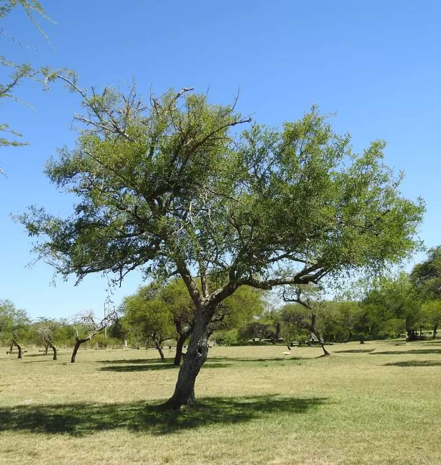
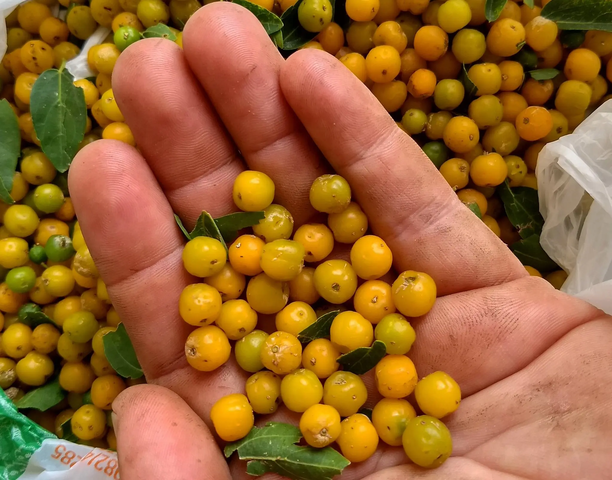
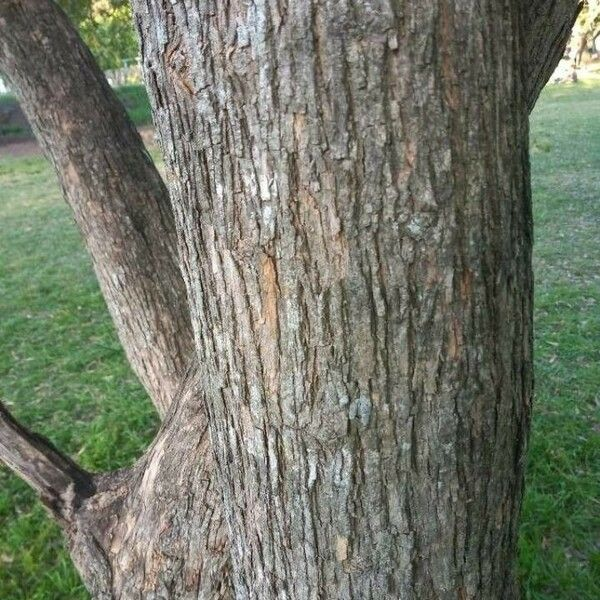

- Familia: Ulmáceas (Ulmaceae)
- Tronco: recto y cilíndrico.
- Corteza: de poco espesor, agrietada y escamosa.
- Copa: es amplia y redondeada. a medida que el árbol crece, desarrolla una forma más extendida y abovedada.
- Hoja: de 10-50 mm (no cm), simples, alternas, caducas, pecioladas y ovadas.
- Flor: pequeñas, de color amarillento y perfectas.
- Fruto: drupas poco carnosas, ovoides, lisas y de color amarillo-anaranjado.
- Usos: para madera, alimento, medicinal, sombra y ornamentación, conservación del suelo, apicultura y decorativo.
- Floración: florece en primavera.
- Fructificacion: comienza entre verano y otoño.
- Reproducción: a partir de semillas o por esquejes.

Hoja

Fruto

Corteza